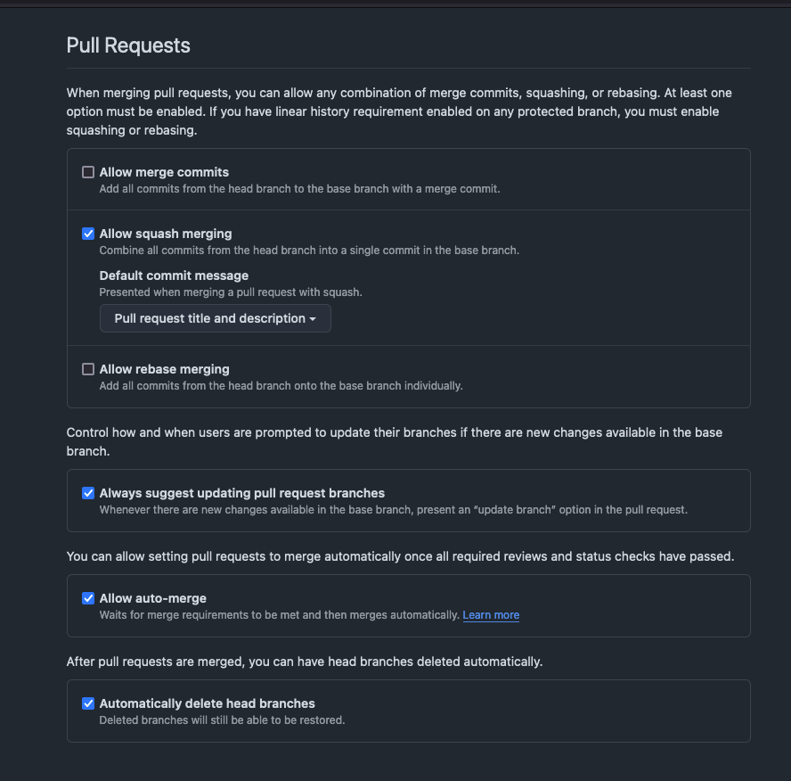
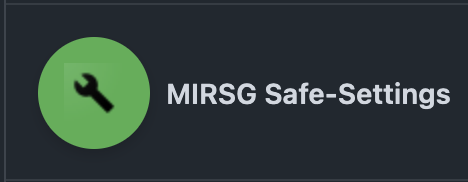

2025-02-11
Scan to view the slides

An app to manage policy-as-code and apply repository settings across an organisation.
admin repo (or an alternative of your choosing) within your organisation.org, suborgs, and repos in YAML files.safe-settings can be run with GitHub Actions.safe-settings, all the settings are stored centrally in an admin repo within the organisation. Unlike the GitHub Repository Settings App, the settings files cannot be in individual repositories.dry-run mode to evaluate and validate the changes. Checks pass or fail based on the dry-run results.safe-settings the settings can have 2 types of targets:
org - These settings are applied to the organisation. Org-targeted settings are defined in .github/settings.yaml. Currently, only rulesets are supported as org-targeted settings.repo - These settings are applied to repositories.repo-targeted settings, there can be 3 levels at which the settings are managed:
Org-level settings are defined in .github/settings.yaml.Suborg level settings. A suborg is an arbitrary collection of repos belonging to projects, business units, or teams. The suborg settings reside in a YAML file for each suborg in the .github/suborgs folder.Repo level settings. They reside in a repo specific YAML in .github/repos folder.org-level, suborg-level, and repo-level units. This will allow different teams to define and manage policies for their specific projects or business units. With CODEOWNERS, this will allow different people to be responsible for approving changes in different projects.Safe-settings is designed to run as a service listening for webhook events or as a scheduled job running on some regular cadence. It can also be triggered through GitHub Actions.
The App listens to the following webhook events:
restrictedRepos:
# You can exclude certain repos from safe-settings processing
# If no file is specified, then the following repositories -
# 'admin', '.github', 'safe-settings' are exempted by default
exclude: ['^admin$', '^\.github$', '^safe-settings$', '.*-test']
# Alternatively you can only include certain repos
include: ['^test$']
configvalidators:
- plugin: collaborators
error: |
`Admin cannot be assigned to collaborators`
script: |-
console.log(`baseConfig ${JSON.stringify(baseconfig)}`)
return baseconfig.permission != 'admin'
overridevalidators:
- plugin: branches
error: |-
`Branch protection required_approving_review_count
cannot be overridden to a lower value`
script: |-
console.log(`baseConfig ${JSON.stringify(baseconfig)}`)
console.log(`overrideConfig ${JSON.stringify(overrideconfig)}`)
if (
baseconfig.protection.required_pull_request_reviews.required_approving_review_count
&&
overrideconfig.protection.required_pull_request_reviews.required_approving_review_count
) {
return
overrideconfig.protection.required_pull_request_reviews.required_approving_review_count
>=
baseconfig.protection.required_pull_request_reviews.required_approving_review_count
}
return true
- plugin: labels
error: |
Some error
script: |
return trueWhen there are 1000s of repos to be managed – and there is a global settings change – safe-settings will have to work efficiently and only make the necessary API calls.
The app also has to complete the work within an hour: the lifetime of the GitHub app token.
To address these constraints the following design decisions have been implemented:
Probot automatically handles rate and abuse limits..github/repos/*, it will selectively load the specific repo file based on which repo settings has changed, or a subset of the repo files associated with suborg settings that has changed. The only time all the repo files will be loaded is if there is a global settings file change.real changes.The settings files can be used to set the policies at the org, suborg or repo level.
The following can be configured:
#, e.g. color: '#F341B2'. Make sure to wrap it with quotes!required_pull_request_reviews, required_status_checks, enforce_admins and restrictions). If you don’t want to use one of them you must set it to null (see comments in the example above). Otherwise, none of the settings will be applied.restrictedRepos:
# these repos are all archived and will cause the GHA to fail
# https://github.com/github/safe-settings/issues/443
exclude:
- ^AboutMeGateway$
- ^admin$
- ^ansible-collection-infrastructure-archive$
- ^ansible-collection-omero$
- ^ansible-collection-xnat$
- ^ansible-collection-xnat-archive$
- ^ansible-role-docker$
- ^ansible-role-firewalld$
- ^ansible-role-install-java$
- ^ansible-role-install-python$
- ^ansible-role-omero-web$
- ^ansible-role-postgresql$
- ^ansible-role-provision$
- ^ansible-role-selinux-utils$
- ^ansible-role-ssl-certificates$
- ^ansible-role-template$
- ^ansible-role-tomcat$
- ^catch-srv-plugin$
- ^chenies-mews-cleanup$
- ^cmic-xnat-plugin$
- ^comic100_dax_config$
- ^despiad_customizations$
- ^DevOps-Knowledge-Base$
- ^DicomAnonUtils$
- ^drc_cluster_dax_config$
- ^exo-flim$
- ^flimj-ops$
- ^flimj-ops-scripts$
- ^flimj-ui$
- ^flimlib$
- ^general_bulk_uploader$
- ^gif_extras$
- ^github-actions-maven$
- ^Infrastructure$
- ^LocalDevMedicalImagingEnv$
- ^MIRSE-Research-and-Documentation$
- ^mirsg-github-runner-docker$
- ^mirsg-harvester-terraform-modules$
- ^mirsg-xnat-user-documentation$
- ^module_segmentation$
- ^NCCID-clinical-datatype-for-Covid19-XNAT$
- ^NCCID-clinical-datatype-release$
- ^nccid-data-transfer$
- ^NiftyPipe$
- ^NiftyPipe-Data$
- ^nimg1946-legacy-scripts$
- ^nipype$
- ^omero-ansible-sandpit$
- ^OmeroInstaller$
- ^OmeroInstallerConfig$
- ^promis-omero-import$
- ^protocols$
- ^reimagine-bulk-uploader$
- ^SUMMITCOVIDGateway$
- ^test-gha-arc$
- ^ucl-xsync$
- ^uclh-gae-clinical-gateway$
- ^xnat$
- ^xnat-1946$
- ^xnat-azure-template-terraform$
- ^xnat-azure-terraform$
- ^XNAT-FTD$
- ^xnat-helper$
- ^xnat-setup$
- ^XnatInstaller$autolinks:
- key_prefix: ARCMYS-
url_template: https://myservices-arc.uk.4me.com/requests/<num>
is_alphanumeric: false
repository:
allow_auto_merge: true
allow_merge_commit: false
allow_rebase_merge: false
delete_branch_on_merge: true
has_discussions: false
has_downloads: false
has_wiki: false
squash_merge_commit_message: PR_BODY
squash_merge_commit_title: PR_TITLE
teams:
- name: mirsg
permission: adminsuborgrepos:
- "*"
rulesets:
- name: Default
target: branch
enforcement: active
conditions:
ref_name:
include:
- ~DEFAULT_BRANCH
exclude: []
rules:
- type: deletion
- type: non_fast_forward # prevents force pushes
- name: Pull Requests
target: branch
enforcement: active
bypass_actors:
- actor_id: 2740 # Renovate Bot
actor_type: Integration
bypass_mode: always
conditions:
ref_name:
include:
- ~DEFAULT_BRANCH
exclude: []
rules:
- type: pull_request
parameters:
allowed_merge_types:
- squash
dismiss_stale_reviews_on_push: true
require_code_owner_review: false
require_last_push_approval: false
required_approving_review_count: 1
required_review_thread_resolution: false
- name: Status Checks
target: branch
enforcement: active
conditions:
ref_name:
include:
- ~DEFAULT_BRANCH
exclude: []
rules:
- type: required_status_checks
parameters:
do_not_enforce_on_create: false
required_status_checks:
- context: links
integration_id: 15368
- context: linting
integration_id: 15368
strict_required_status_checks_policy: falsename: Safe Settings Sync
on:
push:
branches:
- main
pull_request:
paths:
- safe-settings/**
- .github/workflows/safe-settings.yaml
schedule:
- cron: 0 */4 * * *
workflow_dispatch: {}
concurrency:
cancel-in-progress: true
group: >-
${{ github.workflow }}-${{
github.event.pull_request.number || github.ref }}
jobs:
safe-settings-sync:
runs-on: ubuntu-latest
env:
SAFE_SETTINGS_VERSION: 2.1.14
SAFE_SETTINGS_CODE_DIR: .safe-settings-code
steps:
- name: Checkout source
uses: actions/checkout@11bd71901bbe5b1630ceea73d27597364c9af683 # v4
- name: Checkout GitHub Safe-Settings repository
uses: actions/checkout@11bd71901bbe5b1630ceea73d27597364c9af683 # v4
with:
path: ${{ env.SAFE_SETTINGS_CODE_DIR }}
ref: ${{ env.SAFE_SETTINGS_VERSION }}
repository: github/safe-settings
- name: Setup Node.js
uses: actions/setup-node@39370e3970a6d050c480ffad4ff0ed4d3fdee5af # v4
with:
cache-dependency-path:
${{ env.SAFE_SETTINGS_CODE_DIR }}/package-lock.json
cache: npm
node-version-file: ${{ env.SAFE_SETTINGS_CODE_DIR }}/.nvmrc
- name: Install dependencies
run: npm install
working-directory: ${{ env.SAFE_SETTINGS_CODE_DIR }}
- name: Run application
run: npm run full-sync
working-directory: ${{ env.SAFE_SETTINGS_CODE_DIR }}
env:
ADMIN_REPO: .github
APP_ID: ${{ vars.SAFE_SETTINGS_APP_ID }}
BLOCK_REPO_RENAME_BY_HUMAN: false
CONFIG_PATH: safe-settings
DEPLOYMENT_CONFIG_FILE:
${{ github.workspace }}/safe-settings/deployment.yaml
ENABLE_PR_COMMENT: true
GH_ORG: ${{ vars.SAFE_SETTINGS_GH_ORG }}
GITHUB_CLIENT_ID: ${{ vars.SAFE_SETTINGS_GITHUB_CLIENT_ID }}
GITHUB_CLIENT_SECRET:
${{ secrets.SAFE_SETTINGS_GITHUB_CLIENT_SECRET }}
LOG_LEVEL: trace
PRIVATE_KEY: ${{ secrets.SAFE_SETTINGS_PRIVATE_KEY }}
SETTINGS_FILE_PATH: organisation.yamlSee https://paddyroddy.github.io/talks/renovate-automating-dependency-management for my previous talk on Renovate.
{
$schema: "https://docs.renovatebot.com/renovate-schema.json",
extends: ["github>UCL-MIRSG/.github//renovate/default-config.json5"],
customManagers: [
{
customType: "regex",
description: "Update GitHub Safe-Settings version",
fileMatch: [".github/workflows/safe-settings.yaml$"],
matchStrings: ["SAFE_SETTINGS_VERSION:\\s(?<currentValue>.*)"],
depNameTemplate: "github/safe-settings",
datasourceTemplate: "github-releases",
},
],
}Expire user authorization tokens.| Read-only | Read and write | |
|---|---|---|
| Actions | Administration | Environments |
| Metadata | Checks | Issues |
| Commit statuses | Pull requests | |
| Contents | Variables | |
| Custom properties |
| Read and write | Admin |
|---|---|
| Administration | Custom properties |
| Members |
None
Where can this GitHub App be installed? Only on this account.
secrets.SAFE_SETTINGS_GITHUB_CLIENT_SECRETsecrets.SAFE_SETTINGS_PRIVATE_KEYvars.SAFE_SETTINGS_APP_IDvars.SAFE_SETTINGS_GH_ORGvars.SAFE_SETTINGS_GITHUB_CLIENT_IDFollow the steps to register a GitHub App from a manifest.
default_events:
- branch_protection_rule
- check_run
- check_suite
- create
- custom_property_values
- member
- pull_request
- push
- repository
- repository_ruleset
- team
default_permissions:
actions: read
administration: write
checks: write
contents: write
environments: write
issues: write
members: write
metadata: read
organization_administration: write
organization_custom_properties: admin
pull_requests: write
repository_custom_properties: write
statuses: write
variables: write
name: Safe Settings
url: https://github.com/github/safe-settings
public: falseGitHub Safe-Settings: Policy as Code - https://paddyroddy.github.io/talks